Aguanta parado todo el día sin esfuerzo, ¡con cualquier zapato!

 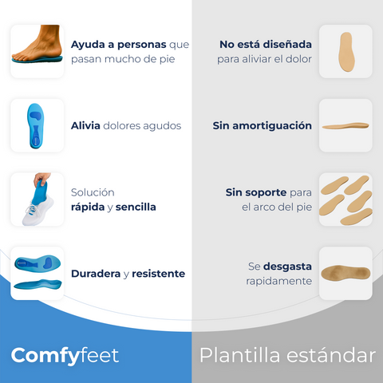
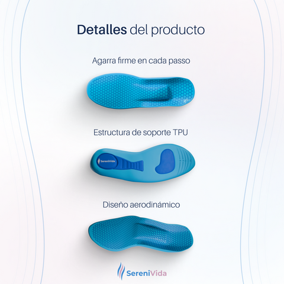
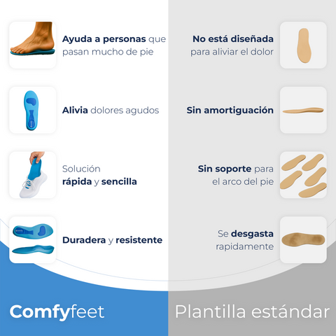
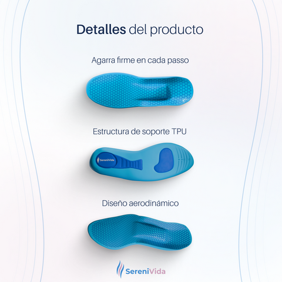

 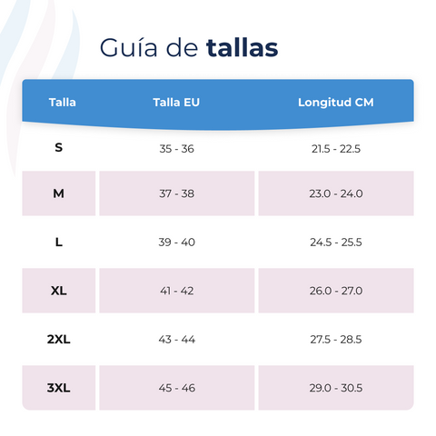
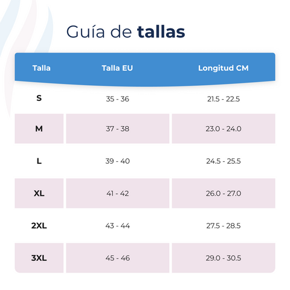

.png)
.png) 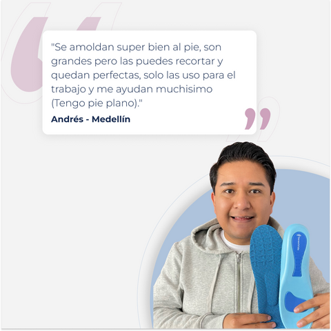
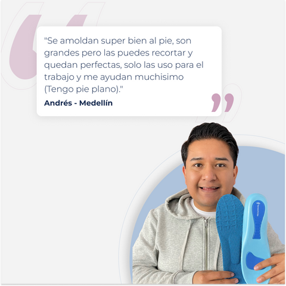


 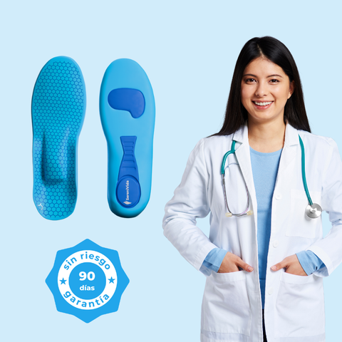
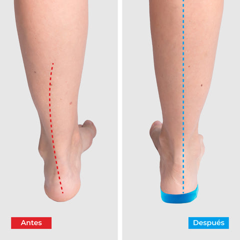
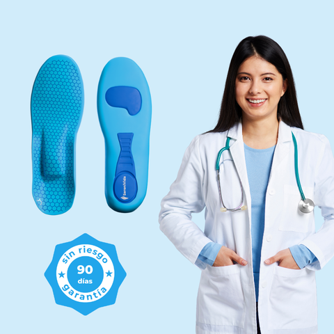
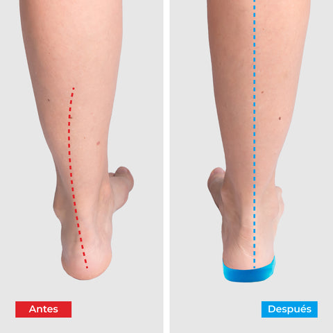
garantía
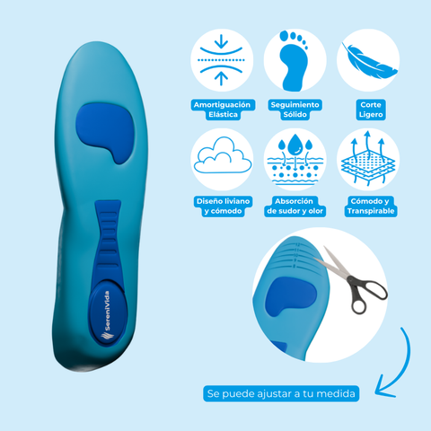
"Durante años luché con la fascitis plantar dolorosa, y probé de todo sin éxito. Desde que empecé a usar las plantillas ComfyFeet, he sentido un alivio increíble. Ahora puedo caminar y estar de pie durante horas sin ese dolor punzante que solía sentir. ¡Recomendaría estas plantillas a cualquiera que esté buscando una solución efectiva y cómoda para la fascitis plantar!"
Plantillas ComfyFeet™ - Disfruta de días sin dolor, sin tratamientos caros ni visitas al médico...
¿Dolor de pies? Obtén alivio inmediato sin cirugía, medicamentos o inyecciones.
Tus pies te amarán con nuestras revolucionarias plantillas para fascitis plantar y juanetes.
- ✓ Experimenta el alivio desde el primer uso
- ✓ Alivia el Dolor de Talón y Arco por Fascitis Plantar
- ✓ Aumenta la Estabilidad de tu Pie y Tobillo para Disminuir la Probabilidad de Lesiones
- ✓ Soporte y comodidad todo el día
Guía de Tallas
Ofrecemos una garantía de 90 días. Si no estás satisfecho con el producto, te devolvemos tu dinero sin hacer preguntas.
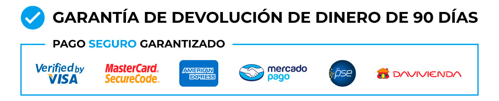- Envío a todo Colombia
- Tiempo de entrega: 3-7 días hábiles
- Pago contra entrega disponible
- Envío gratuito en compras mayores a $100.000
+ 9.458 clientes satisfechos
Como visto en:

DALE A TUS PIES EL ALIVIO QUE MERECEN
Probablemente hayas experimentado el dolor y la incomodidad de tener los pies cansados y adoloridos. Has probado todo, desde costosas terapias físicas, masajeadores de pies dolorosos o, peor aún, simplemente soportar el dolor.
¡Ahora no tienes que hacerlo! Las Plantillas ComfyFeet™ han sido desarrolladas para aliviar instantáneamente el dolor de pies, la hinchazón y fascitis plantar dolorosa tan pronto como las usas.
SOLUCIONADO: La verdadera causa de la dolorosa fascitis plantar
Tus pies son cruciales para el movimiento y la comodidad y requieren apoyo y cuidado constantes. Desafortunadamente, cosas como la neuropatía y la fascitis plantar pueden provocar dolor y malestar crónicos.
Las plantillas ComfyFeet™ proporcionan una solución sencilla y eficaz al mejorar la circulación sanguínea, que es esencial para la salud de los nervios y el alivio del dolor. Bombear sangre fresca y rica en nutrientes a los nervios de los pies es la única forma verdadera de lograr alivio.
ComfyFeet™
con soporte de arco alivian el
dolor
Presentamos: tecnología de plantilla avanzada
Desarrollamos plantillas ComfyFeet™ utilizando tecnología de vanguardia que replica de manera única técnicas terapéuticas probadas. Esta avanzada tecnología de plantilla actúa en la fascitis plantar, la neuropatía y el pie plano desde su origen.
A diferencia de otras soluciones que brindan soporte general, nuestro ComfyFeet™ utiliza un acolchado estratégico que se dirige a áreas específicas que se sabe que mejoran el flujo sanguíneo y la función nerviosa.
Alivian eficazmente tu dolor de:
Detalles del producto
Funciones innovadoras para el máximo alivio
- ✔
Amortiguación específica: las zonas estratégicas con diferentes presiones garantizan que se estimule la circulación sanguínea sin restringir el movimiento.
- ✔
Diseño ergonómico: mantiene tus pies cómodos incluso durante todo el día.
- ✔
Fácil de usar: simplemente inserte las plantillas ComfyFeet™ cada mañana para experimentar alivio durante todo el día.
- ✔
Portátil y versátil: perfecto para usar en casa, cuando viaja o durante actividades que requieren estar de pie o caminar durante mucho tiempo.
Recomendado por médicos y amado por los usuarios.
Las plantillas ComfyFeet™ están clínicamente recomendadas por su eficacia en el tratamiento de la neuropatía y la mejora de la salud del pie. Los usuarios informan de una reducción significativa del dolor y una mejora de la movilidad.
"He probado literalmente todo tipo de plantillas para la neuropatía de mi pie. ¡Estas plantillas fueron las primeras que realmente funcionaron! Siento como si tuviera mi propio podólogo dondequiera que vaya".
Cómo funcionan las plantillas ComfyFeet™
Las plantillas ComfyFeet™ utilizan materiales especiales y un diseño especial para aplicar presión suavemente en áreas clave del pie. Esto estimula la circulación sanguínea y envía sangre rica en nutrientes a los nervios, reduciendo la inflamación y el dolor.
Y así es como funcionan:
Amortiguación dirigida
Apoyo constante
Al brindar un soporte constante durante todo el día, estas plantillas ayudan a estabilizar el pie, lo cual es crucial para mejorar la circulación sanguínea.
Mayor estabilidad
El diseño de las plantillas ComfyFeet™ contiene elementos que aumentan la estabilidad, como soporte de arco reforzado y almohadilla doble para el talón. Esta estabilidad es importante para evitar una tensión adicional en los pies.
Flexibilidad dinámica
A diferencia de las plantillas rígidas tradicionales, las plantillas ComfyFeet™ están fabricadas con materiales flexibles que se adaptan a tus movimientos. Esta flexibilidad garantiza que la plantilla proporcione un beneficio terapéutico continuo.
Imagina un día sin dolor de pies
Imagínate despertarte rejuvenecido y libre del molesto dolor de pies que te ha estado frenando. Las plantillas ComfyFeet™ fueron diseñadas para permitirle hacer precisamente eso.
NO TE QUEDES SOLO CON NUESTRA PALABRA...
VE LO QUE NUESTROS CLIENTES ESTÁN DICIENDO.
"Llevo años batallando con la fascitis plantar, y créanme, he probado de todo: Decidí probar las plantillas ComfyFeet™ y la diferencia fue enorme. No digo que el dolor desapareciera de un día para otro, pero con el uso constante empecé a notar que podía caminar más tiempo sin molestias. Lo mejor es que me dan el soporte que necesito sin ser incómodas, a diferencia de otras que probé y terminé tirando. Si tienes fascitis plantar y ya no sabes qué hacer, estas plantillas valen cada peso. No hacen milagros, pero sí alivian bastante el dolor y te ayudan a moverte sin tanto sufrimiento."
Ricardo H."Llevaba años batallando con el dolor por mis juanetes. Probé de todo: pero sí me ayudaron muchísimo a reducir la molestia y a caminar sin sentir que me clavan un cuchillo en el pie. Después de gastar en varias opciones que no sirvieron para nada, estas fueron las únicas que de verdad hicieron la diferencia. Ahora ya no salgo sin ellas."
Teresa G."Trabajo en una fábrica y paso todo el día de pie con botas de seguridad. Siempre al final del día mis pies estaban hinchados y adoloridos. Decidí probar las plantillas ComfyFeet™ y la diferencia fue enorme. Desde el primer día noté más comodidad en mis botas, y después de unas semanas el dolor disminuyó bastante. Ya no llego a casa con los pies hechos polvo, y puedo aguantar mejor los turnos largos. Si trabajas muchas horas de pie y tienes pie plano, estas plantillas te van a cambiar la vida. Son cómodas, alivian la presión y realmente hacen la diferencia en el día a día."
Carlos F.Envío a todo Colombia • Pago contra entrega
90 DÍAS DE GARANTÍA DE DEVOLUCIÓN DEL DINERO
Cada compra está respaldada por una férrea garantía de "resultados o reembolso".
Sé lo que estás pensando ahora - "esto parece genial, pero ¿funcionará realmente como se promete? ¿O es otro truco de Internet?".
Lo entendemos. Probablemente se ha quemado con otros dispositivos de alivio del dolor que prometían mucho y no lo cumplieron.
Por eso somos diferentes. Una vez que recibas el producto, tienes 90 días para usarlo. Si por alguna razón no consigues aliviar el dolor de pies...
Simplemente envíe un correo electrónico a nuestro equipo de soporte, y le reembolsaremos el importe de su compra.
Así de seguros estamos de que nuestro dispositivo funciona.
¿PREGUNTAS? MIRA AQUÍ
Los beneficios de usar las plantillas ComfyFeet™ incluyen:
- 1- Disminución del dolor y la inflamación
- 2- Reducción de la hinchazón
- 3- Mejora del soporte del arco sin necesidad de usar zapatos.
¡Prepárate para un cambio! Las plantillas ComfyFeet™ están diseñadas con tecnología de amortiguación específica para mejorar la circulación sanguínea, lo cual es crucial para la salud de los nervios y el alivio del dolor.
¡El alivio llega con cada paso! Muchos usuarios informan haber sentido una reducción significativa del dolor tras el primer uso.
¡Úsalos como tu nuevo elemento esencial diario! Las plantillas ComfyFeet™ están diseñadas para brindar comodidad durante todo el día.
Sí, puede cancelar su pedido antes del envío contactando a nuestro equipo de soporte.
Aceptamos pago contra entrega.
Después de haber enviado tu pedido, se enviará una actualización por correo electrónico y WhatsApp. Con el número de seguimiento puedes rastrear tu pedido.
Estamos ofreciendo 1000 unidades a un precio con descuento. La OFERTA terminará en la fecha indicada arriba, o hasta agotar existencias.
Unidades que quedan en el almacén: 17
Envío a todo Colombia • Pago contra entrega • 90 días de garantía